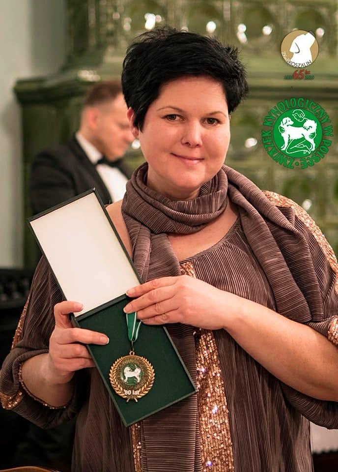

Gończe węgierskie 🐾
To rasa pełna siły, temperamentu i wyjątkowej elegancji. Nasze gończe węgierskie są ważną częścią historii hodowli i jej najbardziej prestiżowych sukcesów.
Nasza hodowla to lata pracy, doświadczenia i ogromnej pasji do psów rasowych. To właśnie dzięki konsekwencji, wiedzy hodowlanej i miłości do rasy budowaliśmy przez lata nasze tytuły, nasze sukcesy i renomę, która dziś jest rozpoznawalna oraz ceniona w świecie kynologicznym.

Gwiazda Wikingów to hodowla tworzona z sercem, doświadczeniem i ogromnym szacunkiem do ras, z którymi pracujemy. Naszą markę budowaliśmy przez lata dzięki jakości naszych psów, aktywności wystawowej i sukcesom, które mają dla nas prawdziwe znaczenie.
Nasza hodowla od lat opiera się na świadomych decyzjach, odpowiedzialności i dążeniu do jakości. To właśnie ta konsekwencja pozwoliła nam budować pozycję hodowli kojarzonej z klasą, doświadczeniem i prawdziwą pasją do psów.

W naszej hodowli szczególne miejsce zajmują rasy, które łączą piękno, charakter, użytkowość i wyjątkową obecność na ringu.
To rasa pełna siły, temperamentu i wyjątkowej elegancji. Nasze gończe węgierskie są ważną częścią historii hodowli i jej najbardziej prestiżowych sukcesów.
Jamniki od lat zajmują szczególne miejsce w naszej pracy hodowlanej. To psy z charakterem, klasą i ogromnym potencjałem wystawowym.
Rasa o wyjątkowym uroku, charakterze i prezencji. Nasze border terriery również zapisały się w historii hodowli ważnymi sukcesami i tytułami.
Nasze osiągnięcia są efektem wielu lat pracy, zaangażowania i obecności na wystawach. To dorobek, który budowaliśmy konsekwentnie, pokazując nasze psy, zdobywając tytuły i zapisując kolejne ważne momenty w historii naszej hodowli.
W dorobku naszej hodowli znajdują się tytuły i sukcesy, które mają ogromne znaczenie i od razu przyciągają uwagę. Nasze psy zdobywały między innymi:
Nasze psy zdobywały nie tylko pojedyncze wygrane, ale także ważne tytuły, które są potwierdzeniem ich klasy i jakości. W naszym dorobku znajdują się:
Nasze psy były doceniane nie tylko na pojedynczych wystawach, ale również w rankingach i sezonowych podsumowaniach. To pokazuje, że nasza pozycja jest budowana na realnym dorobku, a nie tylko na jednym sukcesie.
W świecie wystaw wiele osób zna skróty takie jak CACIB, CWC, BOB czy BOS, ale dla osób spoza środowiska najważniejsze jest to, co te sukcesy naprawdę znaczą. Dla nas znaczą one jedno: nasze psy były wielokrotnie uznawane za jedne z najlepszych, zdobywały najwyższe lokaty, zwycięstwa ras, ważne championaty i prestiżowe tytuły, które budują markę hodowli przez lata.
To właśnie dzięki takim osiągnięciom nasza hodowla jest kojarzona z jakością, doświadczeniem i klasą. Nasze tytuły to nie tylko skróty wystawowe, ale realne potwierdzenie poziomu naszych psów i efekt naszej wieloletniej pracy.
Miejsce na elegancką prezentację naszych psów hodowlanych, ich jakości, pochodzenia i znaczenia dla hodowli.
Tu możesz dodać opis psa, jego pochodzenie, tytuły i rolę w hodowli.
Idealne miejsce na kolejnego psa z ważnym znaczeniem dla dalszego rozwoju linii.
Możesz tu pokazać psa szczególnie wyróżniającego się jakością i sukcesami.
Miejsce na prezentację naszych suk hodowlanych, ich charakteru, jakości i znaczenia dla kolejnych pokoleń w hodowli.
Tu możesz opisać jej pochodzenie, atuty, sukcesy i znaczenie dla hodowli.
Miejsce na sukę ważną dla linii i dalszej pracy hodowlanej.
Dobre miejsce na młodszą sukę lub przyszłą kontynuatorkę hodowli.
Miejsce na informacje o dostępnych szczeniętach, planowanych miotach i danych dla przyszłych opiekunów.
Tu możesz umieścić aktualne informacje o maluchach i ich statusach.
Sekcja idealna do pokazania planów hodowlanych i przyszłych skojarzeń.
Możesz tu opisać sposób kontaktu i wybór odpowiedniego domu dla szczenięcia.
Zapraszamy do kontaktu – chętnie odpowiemy na pytania dotyczące naszych psów i hodowli.
Telefon:
📞 +48 505 760 911
E-mail:
✉️ Gwiazga_wikingow@poczta.fm
Facebook:
🔗 Przejdź do naszej strony
Najlepszy kontakt telefoniczny lub przez Facebooka. Odpowiadamy również na wiadomości mailowe.